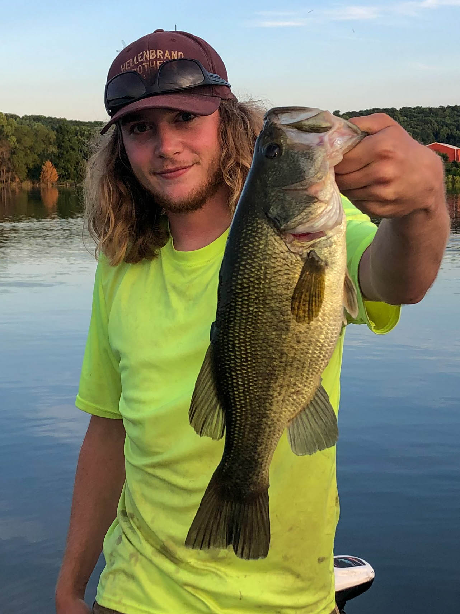

I mostly fish in Wisconsin where I primarily target bass, walleye, panfish and trout.
There are also many other species that I've hooked in Wisconsin from sauger, to musky and catfish. I also like to try and fish when I travel. I caught a tarpon in Puerto Rico!
